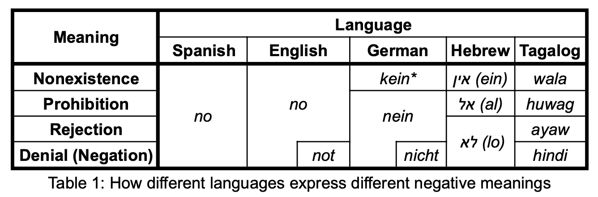

Anyone who has spent any time around a toddler knows that “no” is one of their earliest and most frequently used words. But it isn’t until around—or just after—their second birthday that children seem to understand “no” when it is used to express the logical, truth-functional meaning of negation. What is happening during this interim period—sometimes close to a year!—during which children produce, but do not seem to understand, “no”?
I am exploring two competing hypotheses:
I am developing a series of studies exploring whether children can succeed at tasks like those used to test comprehension of logical negation, but in which the negation words are used to express other, possibly easier-learned functions of negation, like Rejection, Prohibition, Nonexistence, and Metalinguistic negation.
If children do take a full year to learn the logical negation meaning of "no", even after they have begun to produce "no", that may imply that children struggle to learn to logical, truth-functional concept negation.
In addition to expressing logical negation, the word "no" in English can serve several less abstract conversational functions, such as rejecting or prohibiting. Because of this, a child learning English might well initially hypothesize that "no" means rejection or prohibition— in fact, as I've described above, many of their first uses of "no" reflect these simpler meanings.
In contrast, in Tagalog, for instance, the function of rejection is expressed using "ayaw", and prohibition is expressed using "huwag", and so the logical negator "hindi" is left for more obviously truth-functional contexts. As a result, children learning Tagalog never have cause to hypothesize that "hindi" means rejection or prohibition.
How might this difference in linguistic structure affect how children learn negation? If the concept negation is difficult to learn, then maybe clustered simpler meanings on one word like in English could help children form the necessary abstraction to learn the concept. On the other hand, if the main task is linguistic, then maybe a more 1-1 mapping between meanings and words, like in Tagalog, would be easier to resolve.
I am using Bayesian growth-curve analyses to compare the emergence of logical Denial negation in large corpora of naturally-produced children's speech in 5 languages—Spanish, English, German, Hebrew, and Tagalog—that have varying numbers of meanings mapped to a single word. If clustered meanings on a single word facilitate conceptual development, then we predict that children learning English and Spanish should learn Denial negation fastest, and children learning Tagalog should learn slowest, relative to their overall language acquisition. If instead the main task is learning meaning mappings, then we predict that children learning Tagalog should learn Denial fastest, and children learning English and Spanish should learn slowest.
I am spearheading a collaboration with the University of the Philippines, Manila to replicate tests of negation comprehension, including those described above designed to test specific functions of negation, in children learning Tagalog. Crucially, we are testing comprehension of both the function-specific negators and the logical negator. For instance, we are testing comprehension of rejection using the rejection-specific negator "ayaw" and the logical negator "hindi". This will both allow us to confirm our assumption that, unlike children learning English, children learning Tagalog do not assign other, more specific meanings to their logical negator, and to better understand how the timeline of acquiring negation differs between Tagalog and English.
Even before they begin to understant or produce logical negation, children seem to have some ability to think with negation-like concepts. Around 17 months, children begin to succeed on a collection of tasks in various domains involving reasoning in a disjunctive syllogism format—A or B; not A; therefore B. Does this sudden flurry of successes reflect a major conceptual development—for instance, the ability to exclude an option from consideration? Or does it merely reflect an improvement in auiliary capacities like inhibition or working memory?
I am designing a novel structural-priming task to test whether children are using the same concept to solve disjunctive syllogism tasks in different domains. Children will be exposed to a disjunctive syllogism task in one domain (e.g., a search task), and then tested in another domain (e.g., a causal disambiguation task). If they are employing some domain-general logical concept on both tasks, then exposure to one task should prime the use of that concept on the second task. If, instead, children are relying on more domain specific strategies for success (e.g., a search algorithm, or a heuristic like avoid empty), then there should be no effect of priming.